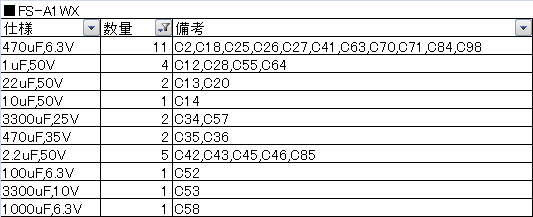
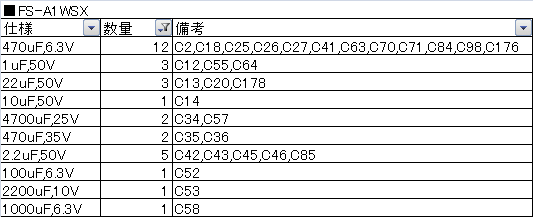
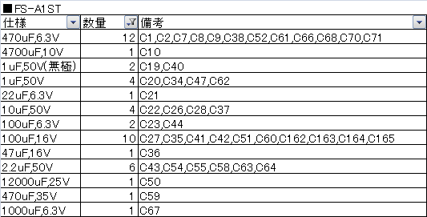
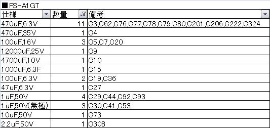
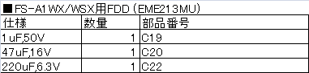
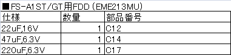

Sorry, I'm not sweet!
Last Update 2018.08.18
噂のネタになり得なかった何か・・・つまり雑談(^-^;
2015.10.17 "怒", "ウィザードリィＩ" の基板、メガコンタイプ判明。
2015.10.25 "フェアリーランドストーリー" の基板、メガコンタイプ判明。
2016.01.16 "アークティック" の基板、メガコンタイプ判明。
2016.03.19 "1942 (MSX2版)" の基板、メガコンタイプ判明。
2016.04.24 "孔雀王" 削除。
2016.06.25 "サイキック・ウォー", "迷宮神話", "ロボレス2001年" の基板、メガコンタイプ判明。
2016.09.22 "NEW HORIZON 中学2年", "NEW HORIZON 中学3年", "ラビリンス" の基板、メガコンタイプ判明。
2017.01.16 "プレデター", "マグナム危機一髪" の基板、メガコンタイプ判明。
2017.03.05 "りっくとみっくの大冒険" の基板、メガコンタイプ判明。
2017.07.02 "アルギースの翼", "クレイズ" の基板、メガコンタイプ判明。
2018.01.02 "アクロジェット", "学園物語" の基板、メガコンタイプ判明。
2018.04.08 "かんたん手帳リフィルくん", "生命惑星M36", "ソフィア" の基板、メガコンタイプ判明。
2018.08.18 "バットマン" の基板、メガコンタイプ判明。
孔雀王については、どうもディスク版しか存在していないように見受けられたので一旦削除します。ヤフオク等でもディスク版しか見たことがありません。もし、ROM版を実際に見たことがある方がいたらご連絡ください。ＭＳＸマガジンで調べてみたところ、
1988年 9月号と10月号には「 9月21日発売 3.5" 2DD」と記載
1988年11月号には「近日発売 ROM」と記載
1989年 1月号付録のソフトカタログには「ROM」と記載
むしろディスク版の存在自体が否定されそうな勢いです・・・。
アークティック→ TAS-1M008S、LZ93A13使用アクロジェット→ MSX-2MX、BS6101使用アルギースの翼→ TAS-4M-008M、LZ93A13使用怒・ＩＫＡＲＩ→ 専用基板、専用メガコン使用1942 (MSX2版)→ TA-1M(8K)、M60002-0125SP使用ウィザードリィＩ→ 専用基板、LZ93A13使用学園物語→ TAS-4M 016-03M、LZ93A13使用かんたん手帳リフィルくん→ TAS-1M016S、LZ93A13使用孔雀王→ 削除クレイズ→ 1M-16KB、NEOS MR6401使用サイキック・ウォー→ TAS-4M-008M、LZ93A13使用生命惑星M36→ TA-1M(8K)、M60002-0125SP使用ソフィア→ TAS-1M008S、LZ93A13使用NEW HORIZON 中学2年→ TA-1M(8K)、M60002-0125SP使用NEW HORIZON 中学3年→ TA-1M(8K)、M60002-0125SP使用バットマン ロビン救出作戦→ TA-1M(8K)、M60002-0125SP使用フェアリーランド・ストーリー→ TA-1M(8K)、M60002-0125SP使用プレデター→ TAS-1M008S、LZ93A13使用マグナム危機一髪→ MSX-2MX、BS6101使用迷宮神話→ TA-1M(16K)、M60002-125SP使用ラビリンス→ TA6228、M60002-0125SP使用りっくとみっくの大冒険→ 基板名無し、BS6101使用ロボレス2001年→ 基板名無し、BS6101使用
ここでは私の独断と偏見で選んだ機種で使われているコンデンサのリストを載せておきます。基本的には実機を見て作っていますが、出荷時期などによって違う可能性がありますので、実際に交換される際は取り外したコンデンサとよく見比べて下さい。
まずは本体基板のコンデンサリスト。




おまけでFDDのコンデンサリスト。


 戻る
戻る